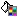

Editor Help
- ถ้าขึ้นบรรทัดใหม่ ให้กด Shift+Enter
- ถ้ากด Enter จะเป็นการ ขึ้น พารากราฟ ใหม่
- ท่านสามารถ คัดลอก หน้า Website จากที่อื่น มาได้โดยการลากเมาส์เลือกทั้งหมด แล้ว กด Copy แล้วมาวางที่นี่ได้
- ห้ามนำเว็บไซต์ นี้ สื่อไปในทางที่ผิด ถ้าตรวจเจอ จะถูกลบออกโดยไม่ทราบสาเหตุ
- ที่นี่เราเปิดกว้างสำหรับทุกคน
 : ตัวหนา
: ตัวหนา
 : ตัวเอียง
: ตัวเอียง
 : สร้างตาราง - กดแล้วจะมี หน้าต่าง เพื่อกำหนด แถว และ คอลัมน์
: สร้างตาราง - กดแล้วจะมี หน้าต่าง เพื่อกำหนด แถว และ คอลัมน์

: สีพื้น - กดเพื่อเลือกเน้นสีพื้น ให้กับตัวอักษร
 : สีตัวอักษร - กดเพื่อเลือกสีตัวอักษร ให้กับตัวอักษร
: สีตัวอักษร - กดเพื่อเลือกสีตัวอักษร ให้กับตัวอักษร
 : TAG HTML - สำหรับคนที่เข้าใจภาษา HTML อยู่แล้ว สามารถ ตกแต่งให้ดูดีได้ยิ่งขึ้นได้จาก Source Code โดยตรง
: TAG HTML - สำหรับคนที่เข้าใจภาษา HTML อยู่แล้ว สามารถ ตกแต่งให้ดูดีได้ยิ่งขึ้นได้จาก Source Code โดยตรง
 : แทรกรูป - พิมพ์ URL เช่น http://www.saksiri.org/images/pum.jpg" เพื่อแสดงรูปได้ รวมถึงกำหนดคุณสมบัติอื่น ๆ
: แทรกรูป - พิมพ์ URL เช่น http://www.saksiri.org/images/pum.jpg" เพื่อแสดงรูปได้ รวมถึงกำหนดคุณสมบัติอื่น ๆ
: ทำ Link - กำหนดคุณสมบัติ ในการ ลิงค์ไปยังเว็บอื่น ๆ ได้
 : Full Screen - เพิ่มเนื้อที่ในการทำงาน ด้วย ปุ่ม ขยาย พอทำเสร็จ ก็จะกลับมาอยู่ที่ Text Area เหมือนเดิม
: Full Screen - เพิ่มเนื้อที่ในการทำงาน ด้วย ปุ่ม ขยาย พอทำเสร็จ ก็จะกลับมาอยู่ที่ Text Area เหมือนเดิม
อื่น ๆ ...